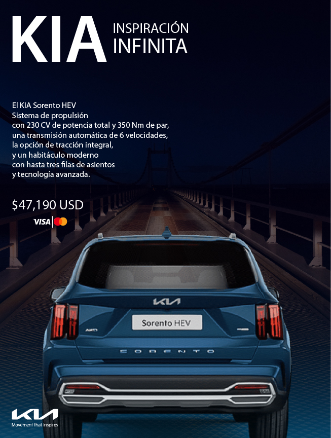
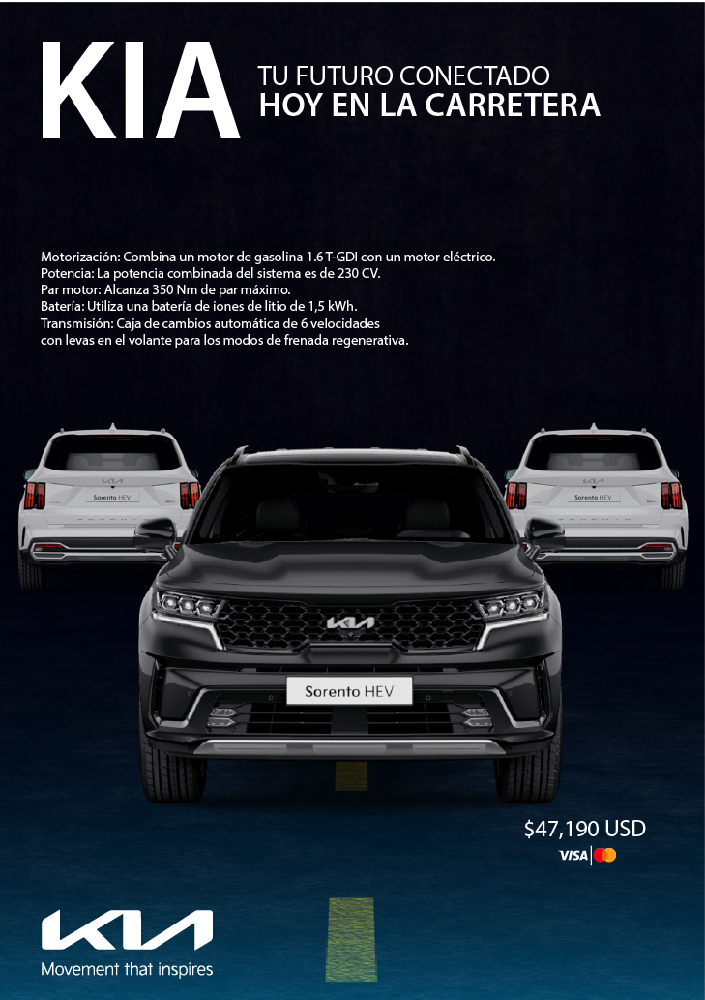
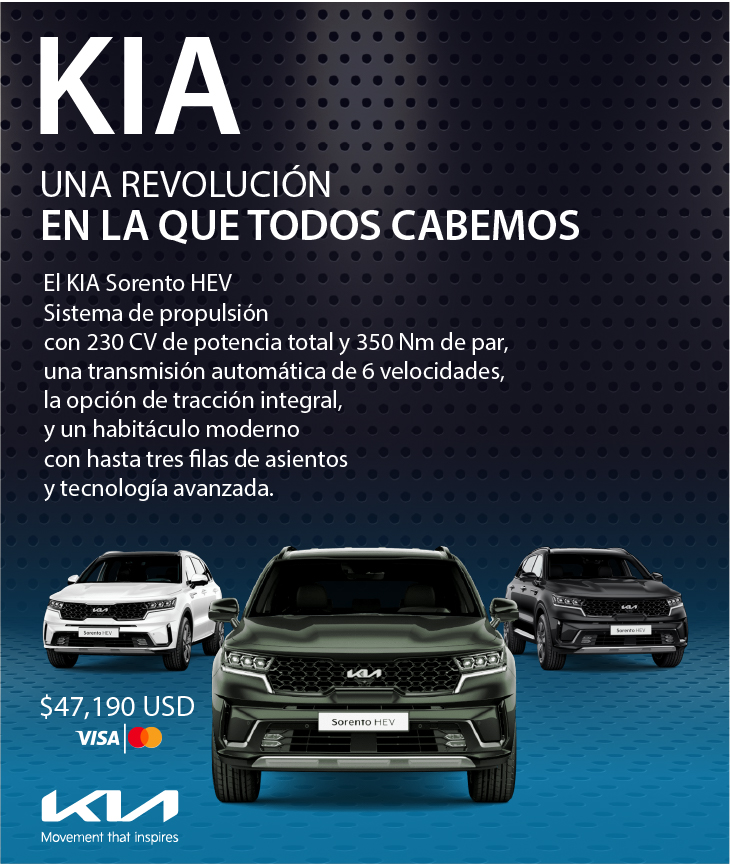
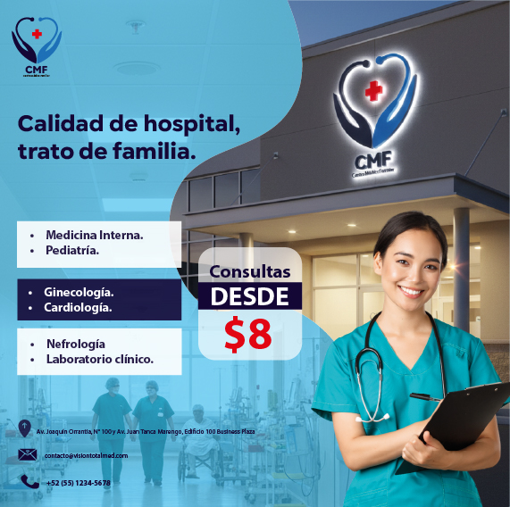
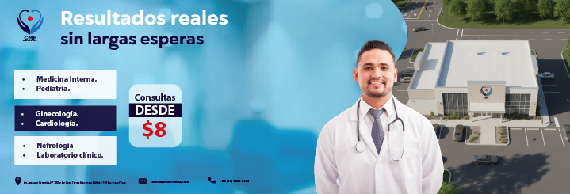

CENTRO MÉDICO FAMILIAR
Campaña visual enfocada en comunicar atención médica accesible y eficiente. El diseño utiliza una paleta azul asociada a confianza y profesionalismo, tipografía clara y recursos fotográficos del personal médico para transmitir cercanía, credibilidad y calidad en el servicio.


